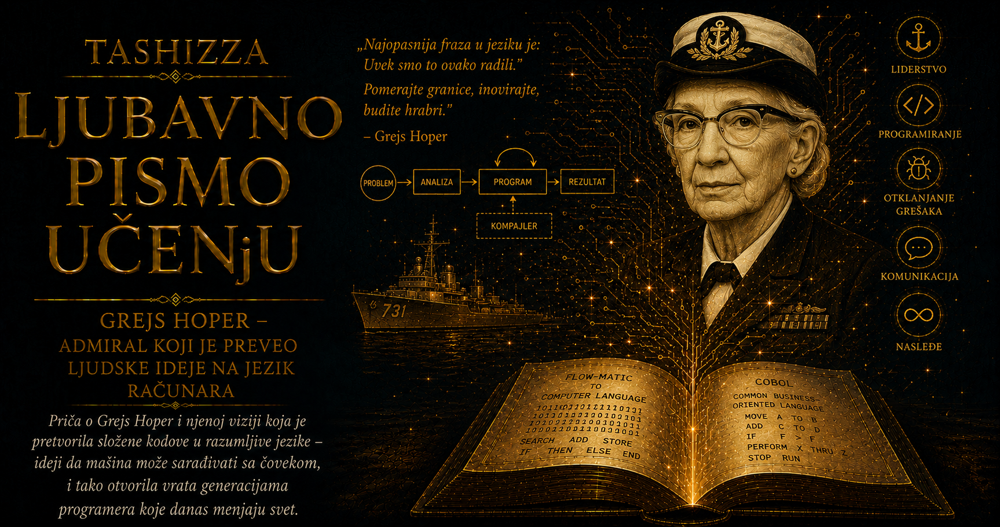

Ljubavno pismo učenju

U prvim godinama elektronskog računarstva programiranje je zahtevalo da se čovek gotovo potpuno prilagodi unutrašnjem ustrojstvu mašine. Programer je morao da poznaje registre, memorijske adrese, kodove operacija i tačan redosled koraka kroz koje će elektromehanički ili elektronski sklop izvršiti zadatak. Jedna pogrešna cifra mogla je da promeni značenje naredbe, pošalje podatak na pogrešno mesto ili zaustavi čitav postupak, dok je program napisan za jednu mašinu uglavnom ostajao neraskidivo vezan za njenu arhitekturu. Računari su već pokazivali zadivljujuću sposobnost računanja, ali je između ljudske zamisli i mašinskog izvršenja stajao ogroman prostor ispunjen ručnim prevođenjem, proveravanjem i ponavljanjem.
Grejs Hoper je u tom prostoru prepoznala jednu od najvećih prepreka budućnosti računarstva. Mašine su mogle postajati brže, pouzdanije i moćnije, ali bi njihov društveni domet ostao uzak ukoliko bi svaki korisnik morao da poznaje najdublje pojedinosti njihovog hardvera. Poslovni stručnjak mogao je precizno objasniti kako se obračunava plata, vodi evidencija zaliha ili priprema finansijski izveštaj, ali taj opis još nije mogao neposredno da postane program. Najpre ga je trebalo rastaviti na mnoštvo sitnih operacija, svaku operaciju prevesti u odgovarajući kod, povezati je sa memorijskom adresom i prilagoditi računaru na kojem će se izvršavati. Veliki deo ljudskog rada trošio se na služenje osobenostima mašine, dok je sam problem zbog kojeg je računar bio potreban ostajao u drugom planu.
Hopperina ključna zamisao bila je jednostavna samo kada se posmatra iz današnje perspektive: računar treba da preuzme deo tog prevodilačkog posla. Čovek bi postupak opisivao pomoću razumljivijih simbola, naziva i naredbi, a poseban program pretvarao bi taj opis u mašinske instrukcije. Početkom pedesetih godina takva ideja zahtevala je duboku promenu u shvatanju računara. Od mašine se više nije očekivalo samo da računa prema unapred pripremljenim instrukcijama; ona je dobijala zadatak da učestvuje u stvaranju programa koji će zatim izvršiti. Time je između ljudske namere i hardvera počeo da nastaje novi sloj digitalnog sveta — softver sposoban da tumači, povezuje i prevodi drugi softver.
Prvi veliki korak na tom putu Hopper je načinila radeći na računaru UNIVAC I, kada je razvijala sistem poznat kao A-0. Njegovo nazivanje prvim kompajlerom zahteva istorijsku preciznost, jer se način na koji je radio razlikovao od savremenih kompajlera koji analiziraju sintaksu i značenje čitavih programskih jezika. A-0 je prihvatao simboličke oznake potprograma i njihove parametre, pronalazio odgovarajuće mašinske rutine, smeštao ih u memoriju i povezivao u program spreman za izvršavanje. U njemu su bile objedinjene funkcije koje će kasnije biti raspoređene između kompajlera, linkera i učitavača, a njegov prelomni značaj ležao je u dokazu da računar može da sastavlja novi program koristeći biblioteku prethodno pripremljenih delova.
Takav postupak menjao je samu ekonomiju programiranja. Jednom proverena rutina za matematički proračun, obradu podatka ili upravljanje ulazom više nije morala da se iznova zapisuje svaki put kada se pojavi isti zadatak. Mogla je da dobije ime, da se sačuva, proverava, poboljšava i ponovo koristi u različitim programima. Programer je počinjao da razmišlja o značenju i funkciji većih celina, dok je sistem preuzimao deo posla njihovog pronalaženja, smeštanja i povezivanja. U tim ranim bibliotekama potprograma već se nalazila klica modularnog softvera i današnjeg sveta programskih paketa, u kojem se složeni sistemi grade oslanjanjem na znanje hiljada ljudi čiji su pouzdani programski delovi sačuvani za buduću upotrebu.
Hopper je svoju zamisao razvijala u kompaniji Eckert–Mauchly, a zatim u organizacijama koje su nastale nakon njenog preuzimanja od strane kompanije Remington Rand. UNIVAC je pripadao prvoj generaciji komercijalnih računara namenjenih državnim ustanovama i velikim preduzećima, pa su njegovi korisnici donosili probleme drugačije od onih koji su preovlađivali u naučnim i vojnim proračunima. Njima su bili potrebni platni spiskovi, fakture, evidencije zaliha, obračuni osiguranja, statistički pregledi i obrada velikih količina poslovnih podataka. U takvom okruženju nazivi kupaca, odeljenja, proizvoda, datoteka i novčanih iznosa imali su veću praktičnu vrednost od apstraktnih nizova kodova čije je značenje postojalo jedino u tehničkim beleškama programera.
Iz susreta sa tim potrebama nastali su MATH-MATIC, namenjen matematičkim i naučnim poslovima, i FLOW-MATIC, jezik prilagođen obradi poslovnih podataka. FLOW-MATIC je omogućavao da se postupci izražavaju naredbama sastavljenim od engleskih reči i da podaci dobiju opisna imena. Program je mogao govoriti o cenama, zalihama, ulaznim datotekama i izlaznim izveštajima, čime se njegova struktura približavala načinu na koji su o poslu razmišljali ljudi u preduzeću. Računar i dalje nije razumevao svakodnevni govor, njegove nijanse i dvosmislenosti; primao je pažljivo uređen formalni jezik, sa ograničenim skupom naredbi i preciznim pravilima prema kojima su se opisivali podaci i postupci.
Upravo je ta uređena sredina između ljudskog i mašinskog jezika predstavljala revolucionarno dostignuće. Naredbe su bile dovoljno bliske poslovnom načinu izražavanja da ih mogu pratiti ljudi koji nisu konstruisali računar, a dovoljno stroge da ih prevodilac može pouzdano pretvoriti u izvršivi kod. Program je postajao i svojevrsni dokument poslovnog procesa. Stručnjak za obračun plata mogao je zajedno sa programerom da prati njegovu logiku, dok je rukovodilac obrade podataka lakše proveravao da li su pravila ustanove pravilno preneta u sistem. Kada bi se promenio poreski propis, način obračuna ili izgled izveštaja, deo programa koji opisuje tu radnju mogao se lakše pronaći, razumeti i izmeniti.
Uz čitljivost, Hopper je dosledno zastupala i mašinsku nezavisnost programa. Proizvođači računara razvijali su sopstvene arhitekture, skupove instrukcija i programske alate, pa je kupac izborom određene mašine često prihvatao čitav zatvoren svet softvera koji je na njoj mogao da radi. Prelazak na drugi sistem zahtevao je ponovno pisanje velikog dela programa i pretio da poništi godine uloženog rada. Mašinski nezavisan jezik obećavao je drugačiju budućnost: isti opis poslovnog postupka mogao bi da se prevede za različite računare ukoliko za svaki od njih postoji odgovarajući kompajler. Znanje sadržano u programu tako bi trajalo duže od hardvera za koji je prvobitno napisano.
FLOW-MATIC je pokazao kako se takva prenosivost može graditi odvajanjem programskog izraza od neposrednih mašinskih kodova, uvođenjem čitljivih naredbi i pažljivim opisivanjem strukture podataka. Njegova iskustva postala su jedan od najvažnijih izvora za COBOL, čije ime potiče od izraza Common Business-Oriented Language. Razvoj COBOL-a pokrenut je 1959. godine zajedničkim radom američkih državnih ustanova, proizvođača računara i velikih korisnika, okupljenih kroz odbore koji će biti povezani sa organizacijom CODASYL. U radu su učestvovali brojni stručnjaci, među njima Meri Hous, Džin Samet, Beti Holberton, Hauard Bromberg i Bob Bemer, donoseći iskustva iz FLOW-MATIC-a, IBM-ovog COMTRAN-a i drugih ranih sistema.
COBOL zato pripada kolektivnoj istoriji računarstva, dok se Hopperin presudan doprinos nalazi u dugogodišnjem zagovaranju automatskog programiranja, razumljivih naredbi, opisnih naziva podataka i programa koji mogu preživeti promenu računarske opreme. Jezik je organizovan u jasno odvojene celine koje opisuju okruženje, podatke i postupke, uz bogatu podršku za zapise, datoteke, sortiranje, izveštaje i decimalnu aritmetiku, naročito važnu u finansijama. Polje u zapisu moglo je precizno predstavljati broj računa, datum, novčani iznos, šifru proizvoda ili ime korisnika, pa je poslovni podatak dobijao sopstvenu strukturu i jasno određeno mesto u programu.
Opširnost COBOL-a, koju će kasnije generacije često posmatrati sa podsmehom, imala je ozbiljnu organizacionu svrhu. Programi namenjeni bankama, osiguravajućim društvima, poreskim upravama, vojnoj logistici i velikim kompanijama trebalo je da traju godinama, da ih održavaju ljudi koji nisu učestvovali u njihovom nastanku i da verno čuvaju složena pravila poslovanja. Razumljiv i izričit opis bio je dragoceniji od sažetog programskog rešenja čiju eleganciju može protumačiti samo njegov autor. Softver je postajao institucionalno pamćenje, jer su se u njegovim naredbama taložili propisi, ugovori, računovodstvene procedure, izuzeci i odluke nastajale tokom mnogih godina.
Širenje COBOL-a pokazalo je da zajednički jezik zahteva i pouzdanu standardizaciju. Proizvođači su uvodili sopstvena proširenja kako bi zadovoljili potrebe kupaca i sačuvali tržišnu prednost, čime je ponovo nastajala opasnost od međusobno nespojivih dijalekata. Nacionalni i međunarodni standardi određivali su zajedničku sintaksu i značenje naredbi, dok su testovi usaglašenosti proveravali da li kompajleri zaista primenjuju propisana pravila. Hopper je tokom kasnije službe u američkoj mornarici snažno doprinosila razvoju takvih postupaka provere. Razumela je da standard dobija stvarnu vrednost tek kada tvrdnja proizvođača može biti potvrđena nezavisnim i ponovljivim testom.
Kroz sve te etape vidi se dosledna nit njene tehničke misli. A-0 je smanjivao ručno sastavljanje već postojećih delova programa; FLOW-MATIC je omogućio da poslovni postupci dobiju razumljivije nazive i naredbe; COBOL je ideju preneo u zajednički jezik namenjen različitim proizvođačima i korisnicima; standardizacija je obećanju prenosivosti pružila proverljivu tehničku osnovu. Svaki korak udaljavao je program od zatvorenosti jedne mašine i približavao ga svetu u kojem softver može da se čita, prenosi, proverava, održava i nadograđuje čak i kada se promeni računar na kojem se izvršava.
Posledice tog razvoja postale su vidljive u razmerama poslova poverenih računarima. Kompanije su automatizovale obračun zarada, fakturisanje, vođenje zaliha, knjiženje uplata, upravljanje polisama osiguranja i pripremanje finansijskih izveštaja. Banke su razvijale sisteme za račune i transakcije, dok su državne ustanove obrađivale poreske, penzijske i statističke podatke za milione ljudi. Veliki paketni poslovi, tokom kojih se ogromne količine zapisa obrađuju bez neposrednog učešća korisnika, postali su jedan od temelja poslovne informatike, a kasnije su dopunjeni interaktivnim sistemima koji moraju pouzdano reagovati u trenutku podizanja novca, izvršenja uplate ili izmene podataka.
Uticaj kompajlera proširio se daleko izvan jednog programskog jezika. Odvajanje izvornog programa od mašinskog koda omogućilo je programerima da rade na višem nivou apstrakcije, usredsređeni na algoritme, podatke i pravila oblasti u kojoj se računar koristi. Kompajler je preuzimao analizu programskih izraza, raspoređivanje memorije, otkrivanje pojedinih grešaka i stvaranje izvršivih instrukcija. Iz tog načela razvile su se čitave porodice programskih jezika, razvojnih okruženja, biblioteka i alata za automatsku proveru. Svaki savremeni program počiva na poverenju da će složen prevodilački sistem ljudski opis postupka pretvoriti u oblik koji procesor može precizno da izvrši.
Hopper je svoj doprinos ostvarivala u razdoblju u kojem su i drugi timovi razvijali asembleri, autokodove, algebraičke prevodioce i jezike poput FORTRAN-a. Džon Bakus i njegov tim u IBM-u pokazivali su kako se naučne formule mogu efikasno prevesti u brz mašinski kod, dok su različite škole programiranja istovremeno istraživale puteve između čoveka i računara. Hopper i njeni saradnici posebno su proširili prevodilačku ideju prema poslovnim korisnicima, bibliotekama potprograma, opisnim podacima, engleskim ključnim rečima i softveru koji ne pripada zauvek jednoj mašini. Njena istorijska veličina upravo se zato jasnije vidi u istrajnosti sa kojom je povezivala pronalazak, praktičnu primenu, timski rad i institucionalnu standardizaciju.
Čuveni moljac pronađen među relejima računara Harvard Mark II pripada ranijem poglavlju te priče. Reči bug i debugging već su postojale u inženjerskom govoru, ali je sačuvani laboratorijski zapis duhovito spojio stari tehnički izraz sa doslovnim uzrokom kvara. Greška je tada mogla imati krila, telo i prašinu na kontaktima; sa razvojem softvera sve veći broj problema selio se u logiku programa, pogrešne formate podataka i skrivene veze između sistema. Kompajleri su uklonili mnoge ručne greške, istovremeno omogućavajući nastanak neuporedivo većih programa, pa je svaki novi nivo apstrakcije širio moć programera i stvarao potrebu za novim postupcima testiranja, dokumentovanja i kontrole kvaliteta.
Dugovečnost COBOL-a pokazuje snagu, ali i cenu uspešne digitalne infrastrukture. Programi napisani pre više decenija još učestvuju u obradi finansijskih, državnih i administrativnih poslova, povezani sa bazama podataka, mrežnim servisima i savremenim aplikacijama. U njima su tokom vremena sakupljana poslovna pravila koja nijedan drugi dokument više ne opisuje potpuno, zbog čega zamena takvih sistema zahteva mnogo više od mehaničkog prevođenja naredbi u noviji jezik. Potrebno je razumeti istorijske propise, izuzetke, formate podataka, veze sa drugim sistemima i razloge zbog kojih je svako pravilo nekada uvedeno. Softver koji dovoljno dugo služi ljudima postaje deo institucije, sa svim njenim znanjem, navikama i nasleđenim obavezama.
Hopperino nasleđe zato počiva na stvaranju pouzdanog prevodilačkog prostora između ljudske namere i mašinske instrukcije. U tom prostoru nalaze se formalni jezici, imenovani podaci, biblioteke proverenih komponenti, zajednički standardi i alati koji proveravaju njihovu primenu. Tehnologija postaje pristupačnija kada se njena složenost pažljivo uredi i poveri sistemima sposobnim da je dosledno obrađuju. Programski jezik tada postaje mesto susreta računara, programera i stručnjaka koji razume problem zbog kojeg se program stvara.
Savremeni digitalni svet nastavio je tim putem kroz module, pakete, funkcije, tipove podataka, virtuelne mašine, automatsko upravljanje memorijom, razvojna okruženja i ogromne biblioteke zajedničkog softvera. Jedan izvorni program danas se može prevesti za različite procesore i operativne sisteme, dok servisi napisani u različitim jezicima sarađuju preko zajedničkih protokola. Ispod svih tih slojeva ostaje zamisao koju je Grejs Hoper uporno pretvarala u radne sisteme: računar može da bude prevodilac, sastavljač i saradnik u izgradnji sopstvenog softvera.
Grejs Hoper je pomogla da program prestane da bude tajna šifra jedne mašine i postane oblik organizovanog ljudskog znanja. Njena vizija omogućila je da jednom stečeno razumevanje bude sačuvano, imenovano, provereno i preneto ljudima koji će nastaviti posao na drugačijim računarima i u okolnostima koje prvi programeri nisu mogli da predvide. Od ranih biblioteka potprograma do savremenih kompajlera koji obrađuju milione redova koda proteže se ista istorija učenja: gradeći sve složenije mašine, čovek je morao da izgradi i jezike kroz koje će sa njima stvarati. Hoper je među prvima jasno razumela da se veličina računara ne meri samo brzinom kojom izvršava naredbe, već i količinom nepotrebnog tereta od kojeg može osloboditi ljudski um.